このページではGitHubというサイトのGitHub pagesというサービスを利用し、無料で静的なサイトを公開する手順を解説する。
※Windows10でやったのでMacだと画面が少し違うかも。だいたい一緒だと思うけど。
※ここでの静的なサイトとはHTML/CSS、Javascriptのみを使用して作成したページの事。
※PHPなどの動作は多分できないと思います（多分）。
GitHubとは？
GitHubは、ソフトウェア開発のプラットフォームであり、ソースコードをホスティングする。コードのバージョン管理システムにはGitを使用する。(Wikipedia)
とりあえず無料で使えるファイル置き場くらいの認識でOK。
Gitという管理システムが出てきますが、わからなくても全然大丈夫。
用意するもの
事前に必要なものは以下の２つ。
- メールアドレス（アカウントの新規登録用）
- 公開するHTML/CSSなどのファイル
手順１
GitHubのアカウントを作成する
まずはGitHubを使うためのアカウントを作成しましょう。
※すでにGitHubアカウントを所有している場合は次の手順まで飛ばしてOK⇒手順２へ
下記のリンクかURLからGitHubのアカウント新規作成画面を開いてください。
⇒ https://github.com/join
 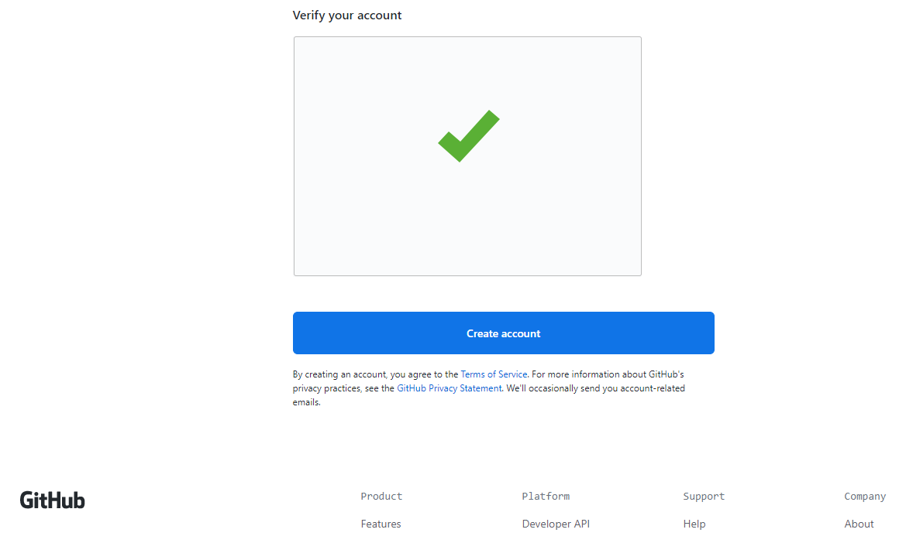
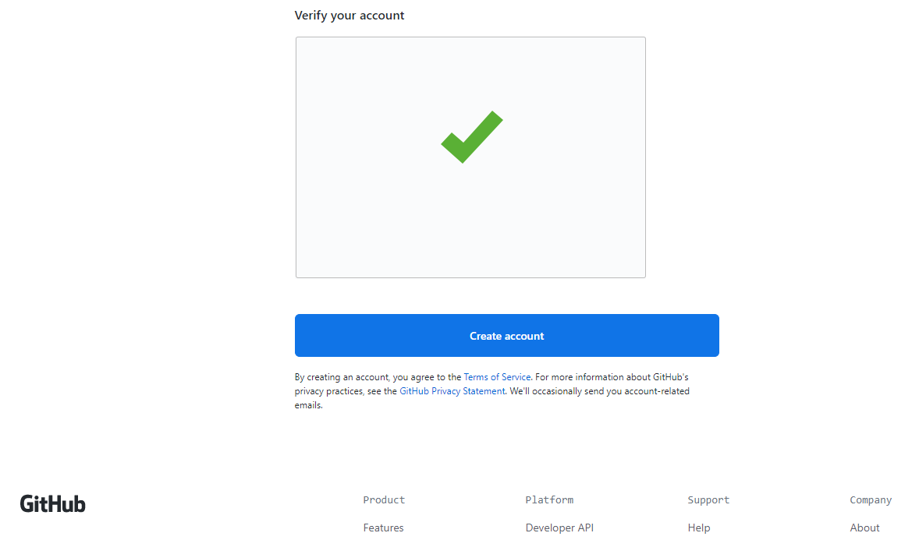
Username、Email address、Passwordを入力する。
ロボットじゃないですチェックをクリアする。
できたら下にある「Create account」を押してアカウントを作成する。
※Usernameは自由に登録してOKだけど、後で公開するURLの一部に含まれるので恥ずかしすぎない名前にしましょうね。
下のような画面になったらOK。
これでGitHubのアカウントが作成されました。
けど今の状態ではまだメール確認が終わっていないためこの後の作業が進められない。
アカウント作成時に登録したメールアドレスを確認してください。
Githubから確認メールが届いているハズなので、そのメールを開いて「Verify email address」を押す。
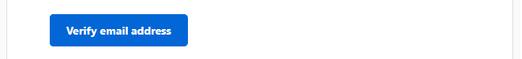下のような画面が開いたらメール確認は無事に完了。
次の手順に進む
手順２
GitHubのリポジトリを作成する
GitHubアカウントの用意ができたので、まずはリポジトリを作成する。
リポジトリとは？
Web上でデータを保管する場所みたいな感じの所。
GitHubの中にリポジトリというデータの置き場を作る。
今回の場合はWeb上で公開するサイトのファイルを置く場所という認識でOK。
画面真ん中左くらいにある「Create a repository」を押してリポジトリを新規作成する。
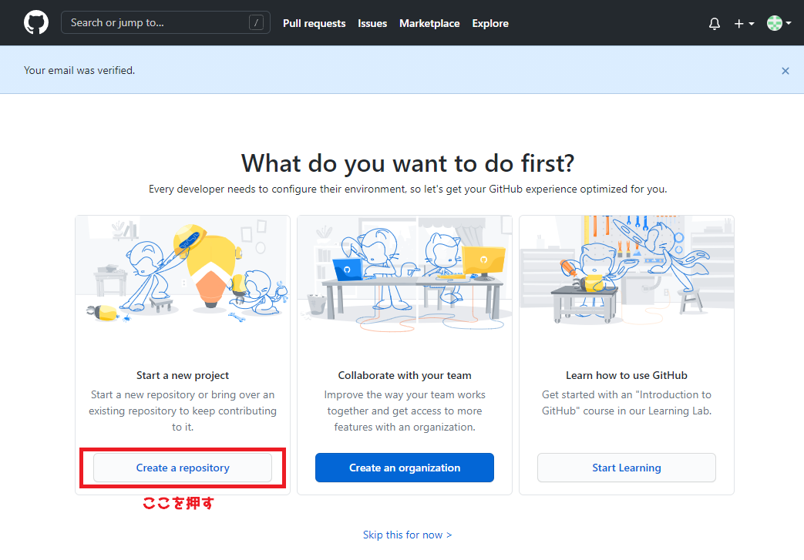下の画像のようなリポジトリの新規作成画面が開くので必要な項目を入力する。
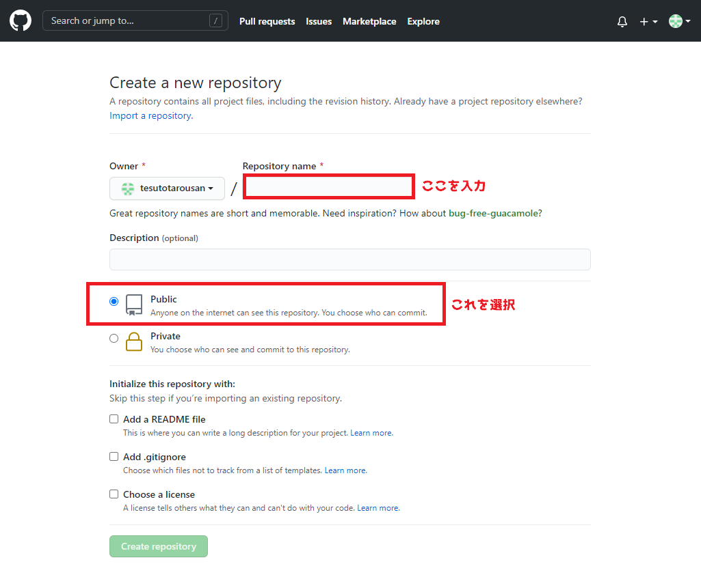基本的にはRepository nameだけ入力すればOK。
※Repository nameもUsernameと同じく後で公開するページのURLに含まれるため、恥ずかしすぎない名前にしましょうね。
真ん中らへんにあるPublic/Privateのラジオボタンは初期表示のままPublicを選択する。
Privateにしてしまうとページが公開できなくなるので注意。
Repository nameの入力が終わったら下にある「Create repository」を押す。
下の画像のような画面が表示されたらリポジトリの作成成功。
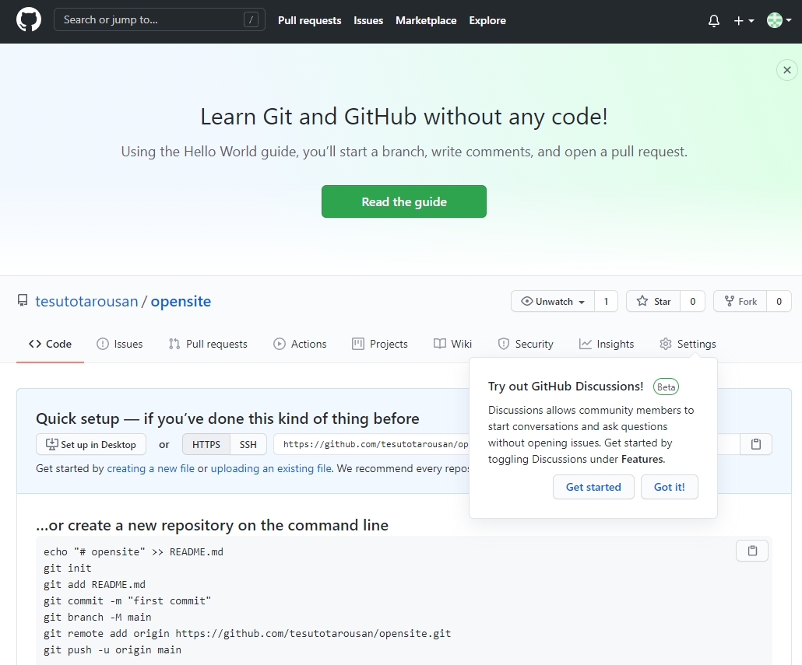この画面が作成したリポジトリの管理画面になる。
公開リポジトリができたので次の手順に進む。
手順３
リポジトリにファイルをアップロードする
リポジトリの作成ができたので、公開するページのファイルをリポジトリにアップロードする。
管理画面の真ん中の少し下にある「uploading an existring file.」というリンクを押してファイルをアップロードするための画面に移動する。
※リンクの文字が小さいので良く探そう。
近くに表示されている「Try out Github Discussions!」のところは無視しても良いし「Got it!」を押して消しても良い。
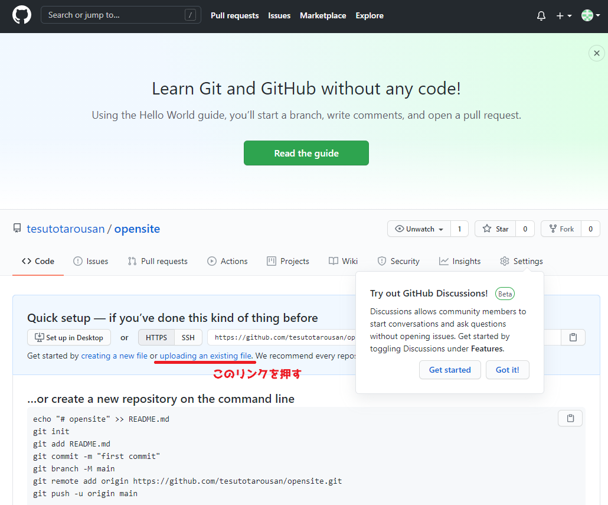アップロードしたいファイルを選択してドラッグし、画面の真ん中にでている「Drag files here to add them to your repository」と書いてある所らへんに投げ込む。
圧縮などはしなくてOK。サイトの中身を丸ごと投入で良い。
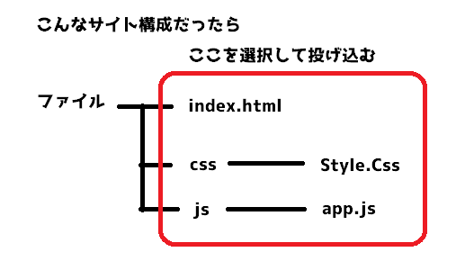 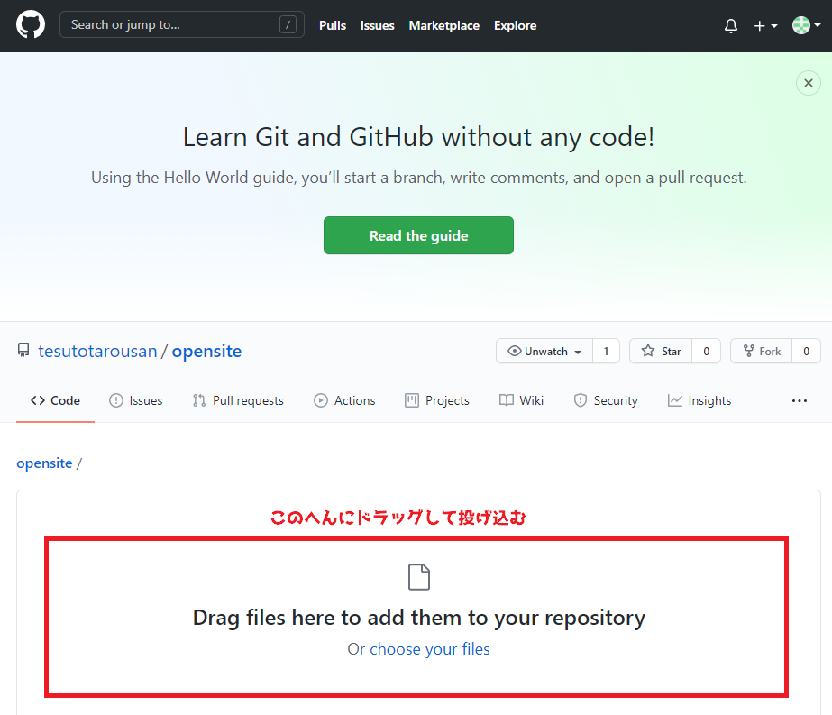上手に放り込めたら「Commit changes」を押してアップロードを実行する。
※間違えて投げ込んでしまったファイルなどは、ファイル名の右側に表示される「×」のボタンで削除できる。
下のような画面が表示されたらアップロード成功。
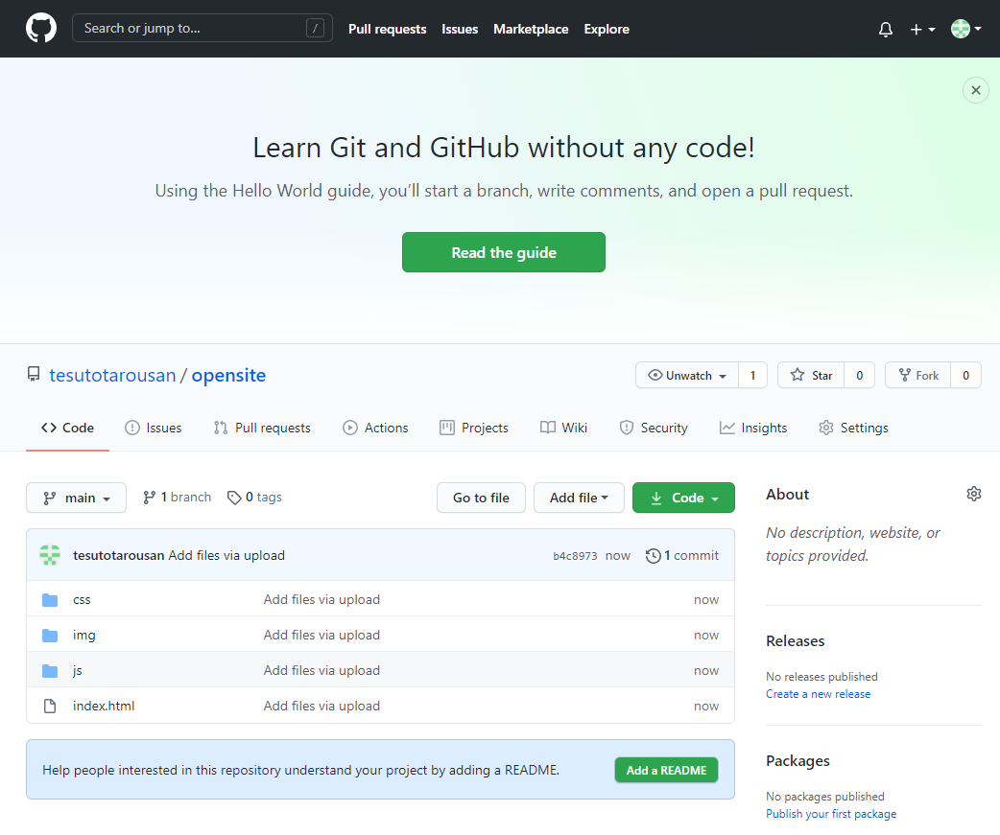※アップロードしたファイルによって微妙に違うので、だいたいこんな画面って感じで。
ここまでで公開リポジトリにサイトのファイルがアップロードされた。
次で最後の手順です。
手順４
GitHub pagesを設定してアップロードしたファイルを公開する
ファイルのアップロードができたので、最後にそのページを公開するための設定をする。
まずはリポジトリの管理画面の右側にあるSettingsを押して設定画面に移行する。
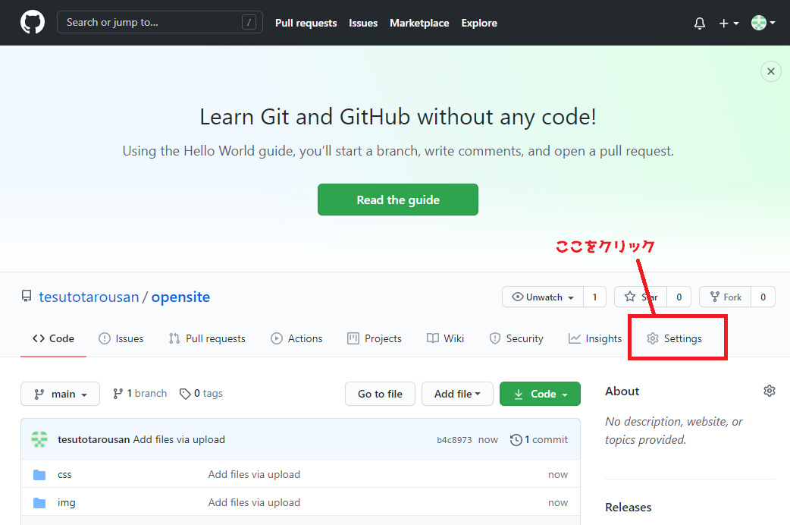設定画面を下にスクロールしていき、GitHub Pagesを探してください。
※けっこう下の方です。
GitHub pagesを見つけたら、その中のSourceを編集する。
Noneとなっているプルダウンのボタンを押して、mainを選択する。
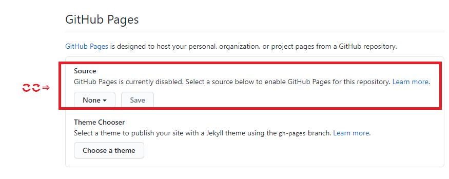 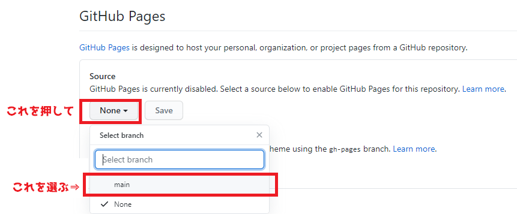Soureceを編集するとSaveボタンが表示されるので、それを押す。
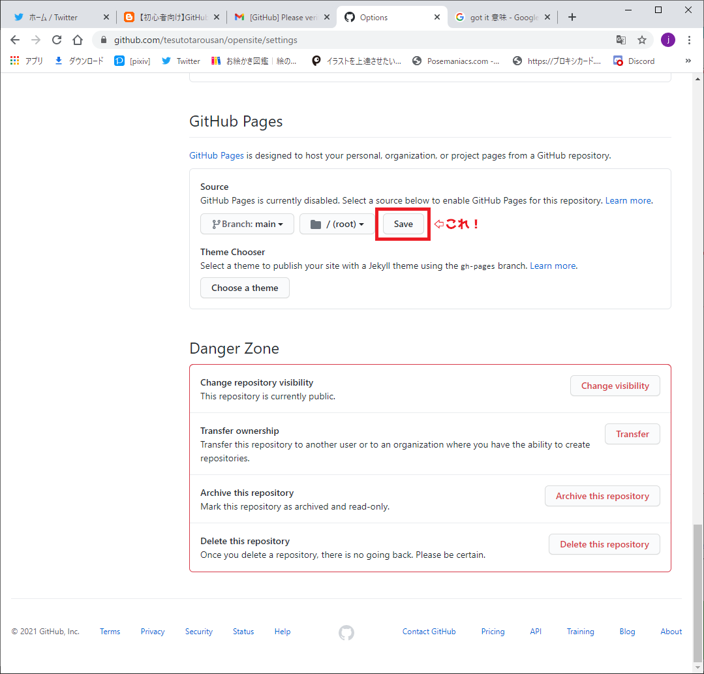設定が保存され、設定画面が更新される。
もう一回下までスクロールしてGitHub pagesの設定が変更されているのを確認してください。
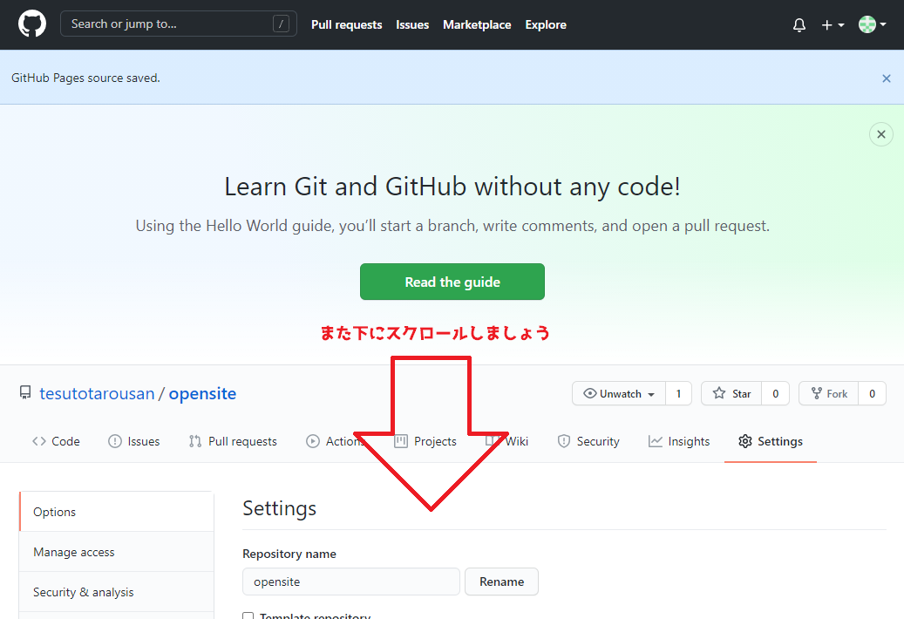 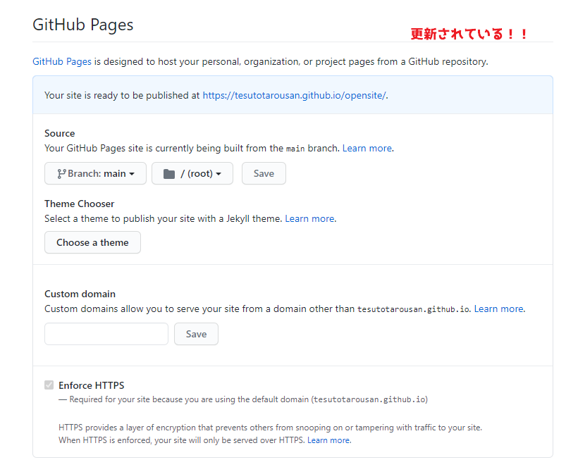設定が更新されていたら準備はOK。
GitHub pagesの下らへんに「Your site is ready to be published at ~~~」と表示されていると思います。
「~~~」の所が公開されたページのURLになっている。
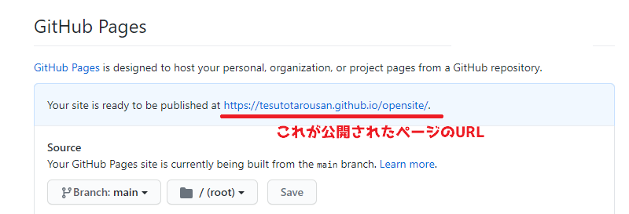開いてみましょう！
アップロードしたページがWeb上で見えるようになっているハズ。
終わり！